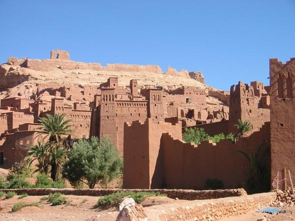

The Portuguese City of Mazagan (El Jadida), one of the first settlements created in Africa by Portuguese explorers on the route to India, bears outstanding witness to the exchange of influences between European and Moroccan cultures from the 16th to the 18th centuries, which are evident in the architecture, technology and town planning. Mazagan was built as a fortified colony on the Atlantic coast at the beginning of the 16th century. the citadel transforming it into a star-shaped fortification.The Portuguese Cistern is an ancient cistern that lies beneath Portuguese city of Mazagan (El Jadida), Morocco. It is a classified cultural heritage monument in Morocco. The cistern was built by the Portuguese inside the Fortress of Mazagan. It dates back to 1514 after replacing a former warehouse or armory. The cistern is known for its thin layer of water covering the floor with reflections from the light of the roof creates beautiful and spooky reflections and shadow-play. The vaulted ceiling, rows of columns and a lot of echoes complete the overall effect of eeriness.
Most shared places
Meknes
Marrakesh

Chefchaouen

Tetouan
